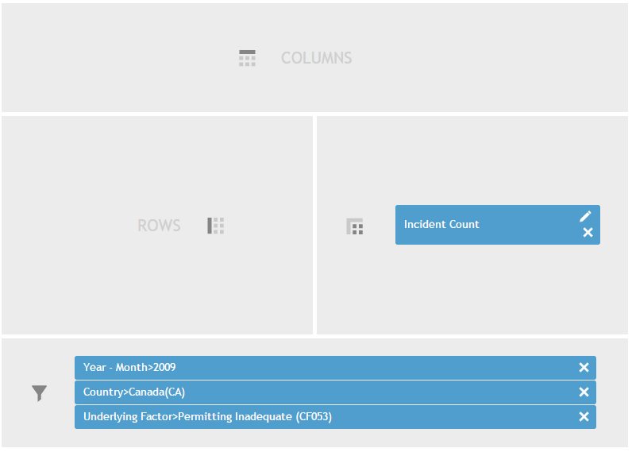

If there is a particular dimension that will refine your Data view, but you do not want to allow an interactive x- or y-axis in the Data view, you can drag that dimension to the Filters drop area.
For example, let’s say you want to see all incident counts in 2009, where the incident record has an underlying factor called “Permitting Inadequate” and where the record's country is Canada. Here is what you should put in the Construction drop areas:
